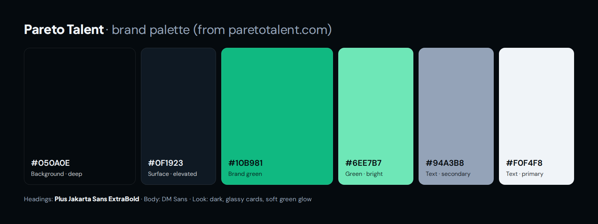
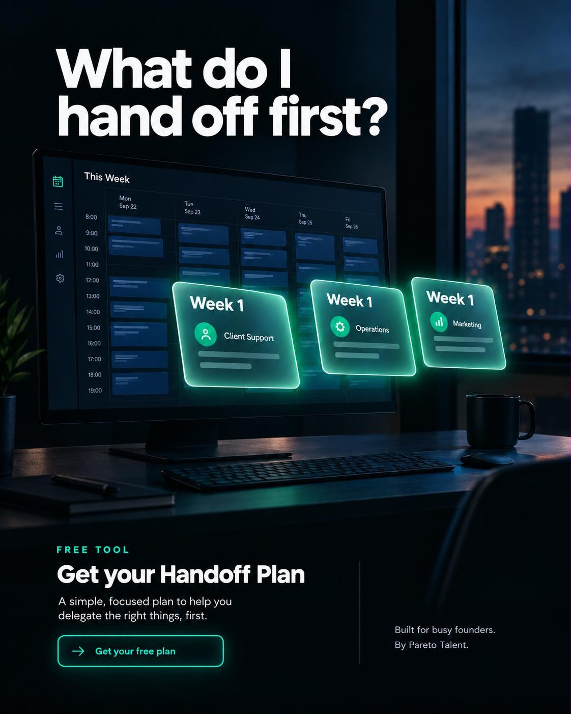
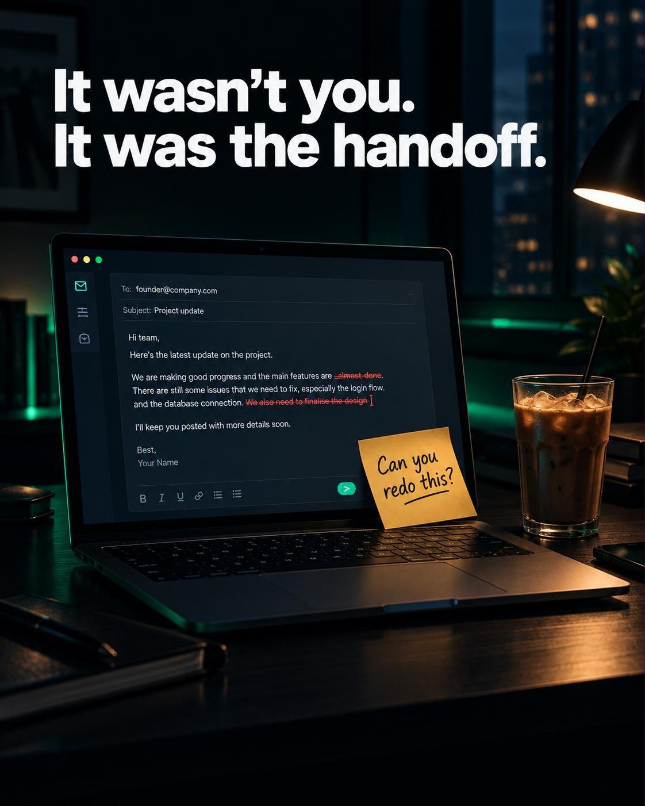
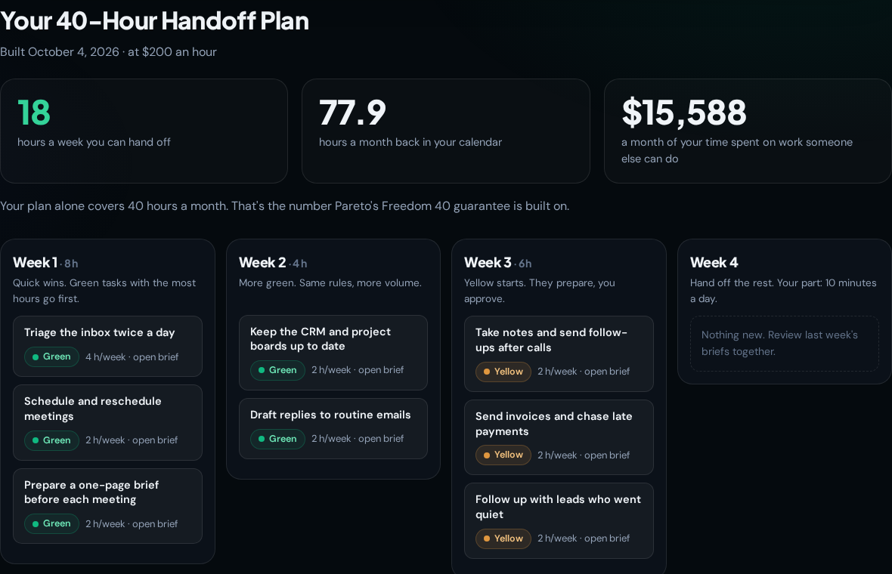
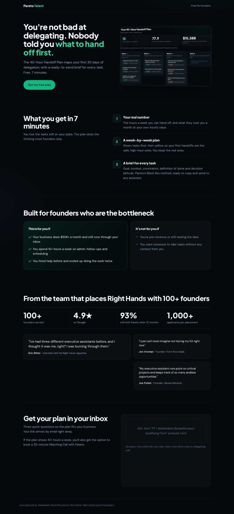
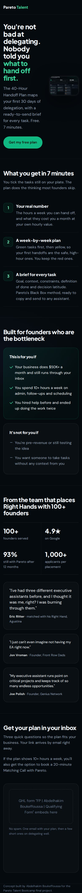
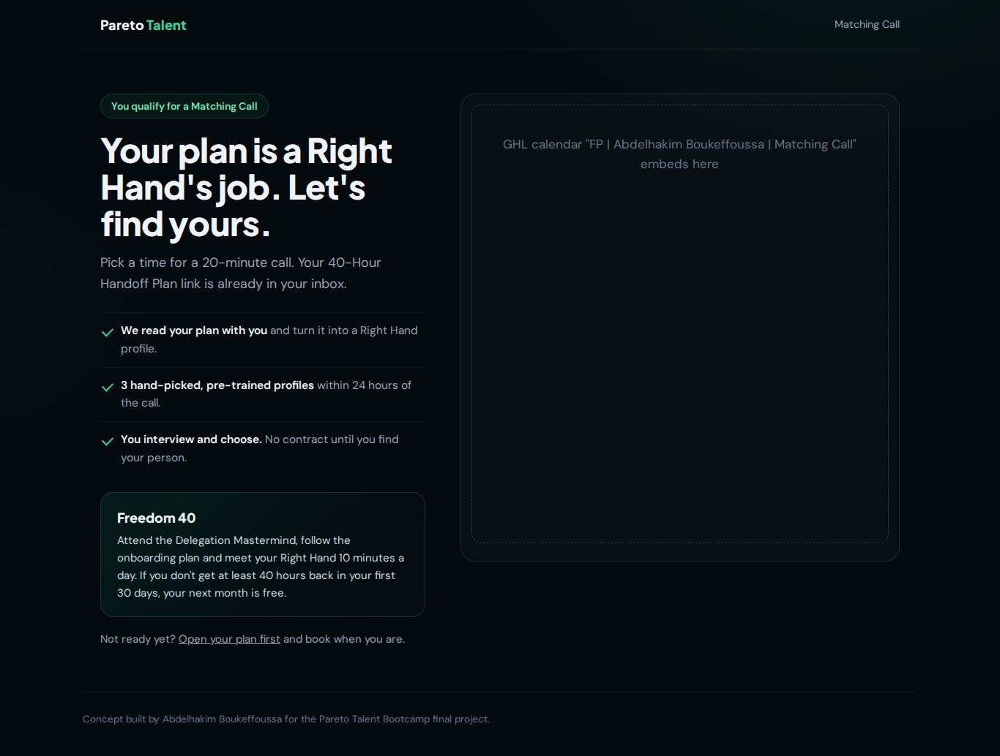
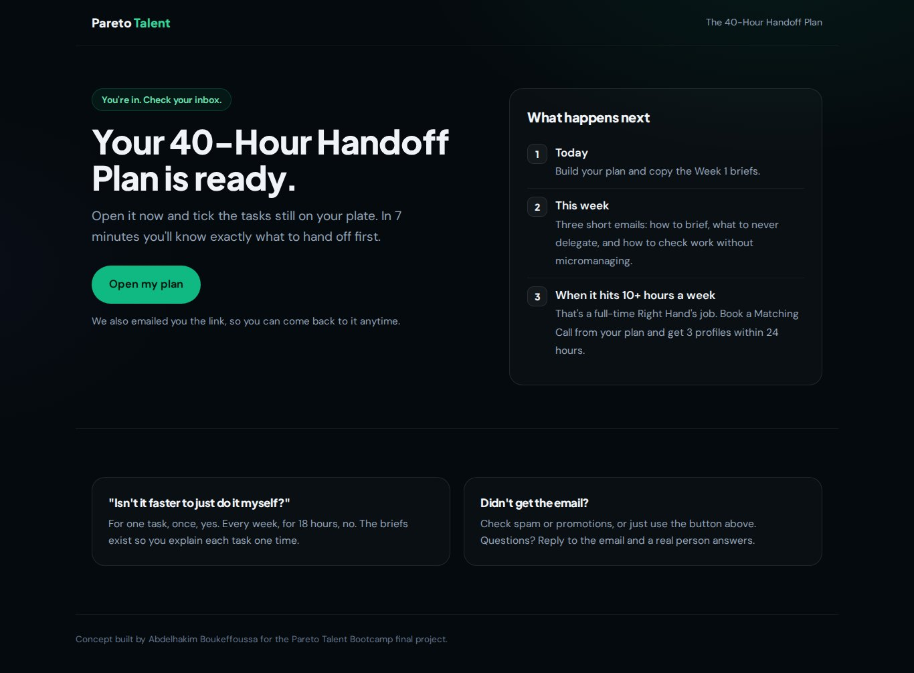

Imagery: one look, taken from Pareto's own site
FP | Abdelhakim Boukeffoussa | Imagery · ads, lead magnet and funnel pages
Nothing here is a guessed brand. The colors and fonts were read from paretotalent.com's live CSS (Chrome DevTools, Oct 4, 2026), so the ads, the lead magnet and the funnel pages look like they came from Pareto's own team.
The style guide (pasted into every image prompt)
Premium, cinematic, editorial photography mixed with clean UI cards. Near-black background (#050A0E), deep navy surfaces (#0F1923), one accent: Pareto green (#10B981), with soft green glow. Headline text in a bold geometric sans (like Plus Jakarta Sans ExtraBold), white (#F0F4F8). No stock-photo smiles, no clutter, no logos, no purple. 4:5 vertical, 1080×1350.
| Token on paretotalent.com | Value | Used for |
|---|---|---|
--bg-deep |
#050A0E | page and ad backgrounds |
--bg-surface / --bg-elevated |
#0B1119 / #0F1923 | cards, panels |
--green |
#10B981 | the one accent: buttons, highlights, glow |
--green-light |
#34D399 | small highlights, ticks |
--text-primary / --text-secondary |
#F0F4F8 / #94A3B8 | headlines / body |
| Headings / body fonts | Plus Jakarta Sans 800 / DM Sans | every headline and paragraph |
Why one palette image goes with every prompt. Image models drift toward purple and teal "AI" colors. Attaching the palette and saying "only the colors in the attached palette" keeps every image inside Pareto's look.

AI images (ChatGPT image generation, style guide + palette attached)
AI 1 · "What do I hand off first?" (used in Ad 1, top of funnel)

Prompt: Facebook ad image for a free delegation tool for busy founders. A founder's weekly calendar on a large monitor in a dark, modern office at dusk, packed solid with dark navy blocks. Three blocks lift off the screen and float forward as glowing glass cards labeled "Week 1". Top text in white bold sans: "What do I hand off first?" Use the style guide and only the colors in the attached palette. 4:5.
AI 2 · "It wasn't you. It was the handoff." (used in Ad 2, middle of funnel)

Prompt: Facebook ad image for founders whose last assistant didn't work out. A desk at night, a laptop showing an email draft with red edits, a yellow sticky note "Can you redo this?" beside a cold coffee. Moody, cinematic, warm practical light against a near-black room with a subtle green glow. Top text in white bold sans: "It wasn't you. It was the handoff." Style guide + attached palette. 4:5.
Ads 3–5 (L13) were designed as UI cards on the same tokens. A calendar that says "your priority is email" or three approval levels reads clearer as an interface than as a photo, and the text stays sharp at feed size.
Product imagery: the lead magnet itself
The landing page shows the real tool, not a mock-up: a plan built in the live lead magnet (L6), on the same palette.

The funnel pages on the same system
Landing page (desktop)

Landing page (mobile)

Booking page (qualified leads)

Thank-you page (not qualified yet)
